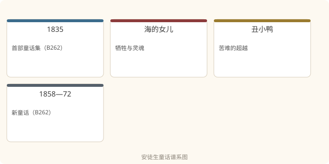

安徒生童话
一、基本信息
| 作者 | 安徒生 |
|---|---|
| 成书/出版 | 1835年首部童话集出版（Britannica：Eventyr, fortalte for børn (1835)）；1858—72年《新童话和故事》（B262） Hans Christian Andersen (Danish author) — Encyclopaedia Britannica（百科全书） |
| 国别/地区 | 丹麦 |
| 时代 | 近代 · 19世纪 |
| 体裁 | 童话集 |
| 语言 | 丹麦语 |

安徒生童话谱系图（主题·结构图）
二、创作背景
Britannica（B262）：首部童话集'Eventyr, fortalte for børn (1835; Tales, Told for Children)'含《打火匣》《小克劳斯和大克劳斯》《豌豆公主》《小意达的花》等；1837/1842年续卷；'Nye eventyr og historier (1858–72)'扩展文类。
地位（B262）：'his fairy tales are among the most frequently translated works in all of literary history'。
'he was not afraid of introducing feelings and ideas that were beyond a child's immediate comprehension'（B262）。
三、内容脉络
名篇谱系（B262 语境+通说）：《海的女儿》《丑小鸭》《卖火柴的小女孩》《皇帝的新装》《白雪皇后》。
从民间童话到'文学童话'的自觉创作（通说）。
四、主要人物表
| 人物 | 身份 | 说明 |
|---|---|---|
| 小美人鱼 | 海的女儿 | 牺牲与灵魂（通说） |
| 丑小鸭 | 天鹅 | 苦难的超越（通说） |
五、主题与艺术特点
- 超越儿童理解的深刻（B262）。
- 边缘人主题（B262：outsiders and triumph over hardship）。
- 口语的讲述体（B262：innovative use of spoken language）。
六、影响与评论
- Britannica：'his fairy tales are among the most frequently translated works in all of literary history'（B262）。
Hans Christian Andersen (Danish author) — Encyclopaedia Britannica（百科全书） - Britannica：'Danish master of the literary fairy tale'（B262）。
Hans Christian Andersen (Danish author) — Encyclopaedia Britannica（百科全书）
七、阅读建议
难点
- 童话的双重读者（儿童/成人）。
- 丹麦福利社会之前的苦难底色。
- 叶君健译《安徒生童话全集》（上海译文出版社，通说待核）。
- 英文原版（公有领域）。
先《海的女儿》《丑小鸭》→《卖火柴的小女孩》《皇帝的新装》。
八、待核实
- 《海的女儿》1837年首刊核对。
- 叶君健译本信息核对。
- 童话总篇数（156篇说）待核。